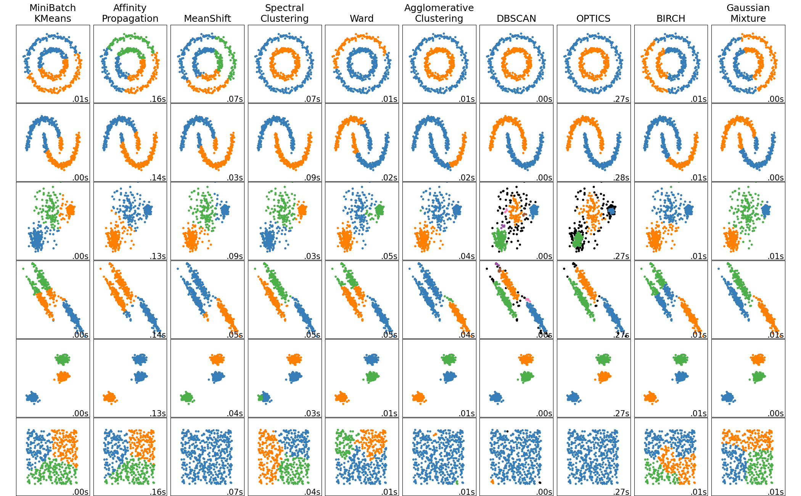

Clustering
Clustering is a machine learning technique that tries to find a natural partition in the data that splits the dataset into k clusters. The result will be a clustering function that map each new object to a sequence (or to noise). Of course, we want the data in the same cluster to be as similar as possible.
A bit of formality
We want to find a function clust() from such that:
Measure the clustering quality
The measure is general and not relented to a particular algorithm. The clustering procedure is unsupervised and, for this reason, a good evaluation is needed to ensure the quality of the clustering. We need one or more score functions to measure the properties of the clustering schema. In addition, if some kind of supervised data is available, it can be used to evaluate the scheme. When the data can be represented in 2D, the result could be visualized but when a projection is needed the result could be not so visually easy to understand.
Measurement criteria
- Cohesion : proximity in the same cluster should be high
- Cluster separation: cluster should be as separated as possible
- distance between the nearest objects in two clusters
- distance between the most distant objects in two clusters
- distance between the centroids of the clusters
- Separation
- Global separation of a clustering scheme
Link between cohesion and separation
In order to measure distance and proximity, we could use Similarity and dissimilarity techniques.
We could use this measures to adjust the clustering scheme by splitting a cluster with poor evaluation or merging two clusters that are weekly separated. But single values could negative impact the score of a cluster or the distance between two clusters. Silhouette
Looking for the best number of clusters
Both Silhouette and SSE aren't good estimators for the clustering quality because silhouette is too expensive to compute and SSE decrease monotonically with the number of clusters. But when the Inertia (or distortion or SSE) has a slope decrease, that is a probably good value for k (elbow method). While the maximum value of the silhouette is often the best value for k.
In the case we have some already-clustered data, we could use it as a test set with Gold standard .
Types of clustering techniques
- Partitioning: K-means
- Hierarchical: Hierarchical clustering
- Based on density: Density based clustering
- Statistics: Model based clustering
Clustering tecniques comparison
